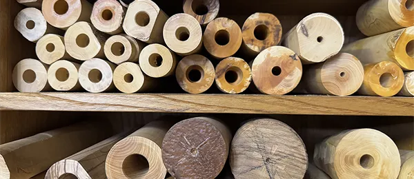
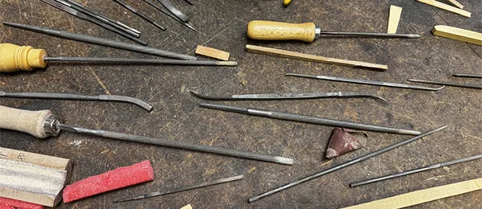
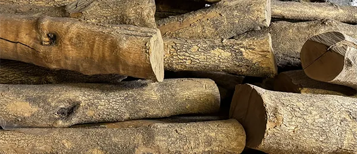
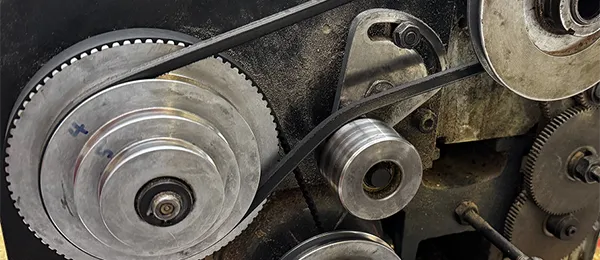
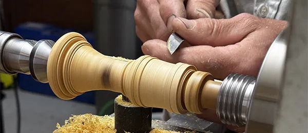
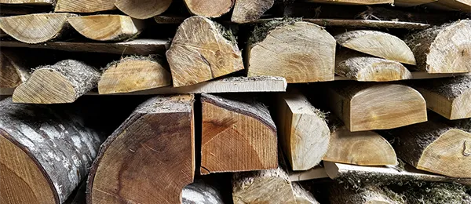
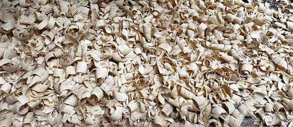

La perce centrale d’une flûte à bec ou d’un hautbois baroque se distingue par sa perce conique irrégulière.
Ou autrement dit, la perce ne diminue pas régulièrement, mais possède des paliers, soit des sections, où la conicité de la perce à certains endroits augmente plus fortement. Ces paliers permettent de gérer les octaves d’une même note. C’est une des découvertes majeures pour la fabrication d’instruments à vent de l’époque baroque.
Même si peut-être les facteurs des 17ᵉ et 18ᵉ siècles utilisaient déjà des alésoirs, qui permettent de reproduire de façon standard une perce irrégulière, ils utilisaient sûrement souvent encore des mèches cuillère qui sont à manier avec plus de précautions.
Aujourd’hui la majorité des facteurs d’instruments à vent utilisent des alésoirs, soit des espèces de mèches qui ont la forme irrégulièrement conique de la perce. Ces alésoirs se présentent sous la forme d’un cylindre conique en métal dur qu’il convient de tourner à la bonne forme et sur lequel on enlève par fraisage un quart pour obtenir un bord tranchant.
Mes alésoirs ont été fabriqués par mon ami Xavier Plantevin. Xavier est à la tête de l’atelier de métal à la haute école d’art et de design de Genève et y a à sa disposition un tour numérique de grande précision. Sans Xavier je n’aurais pas pu réaliser les flûtes et hautbois que je fabrique aujourd’hui.
Sur la base de mes dessins et de mes cotes, Xavier a réalisé mes alésoirs avec professionnalisme et son sens de la précision, voire la préoccupation de la perfection et un soin hors du commun.